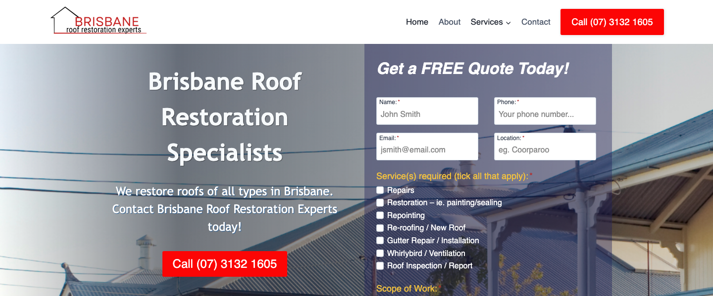
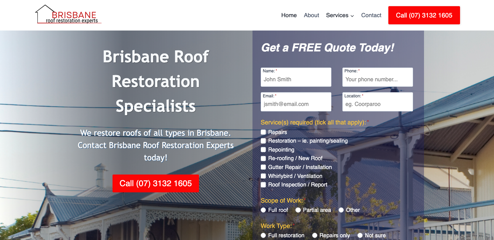
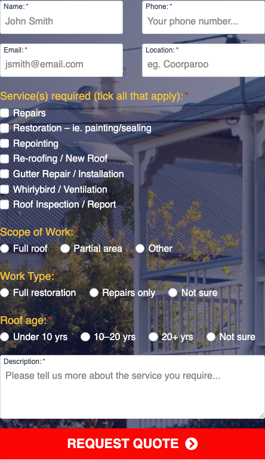
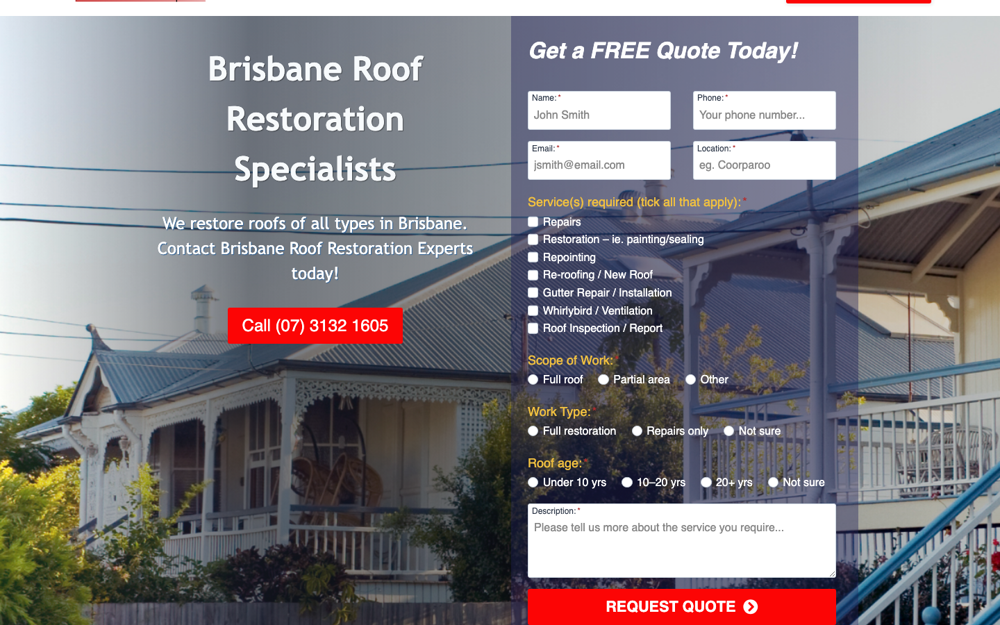
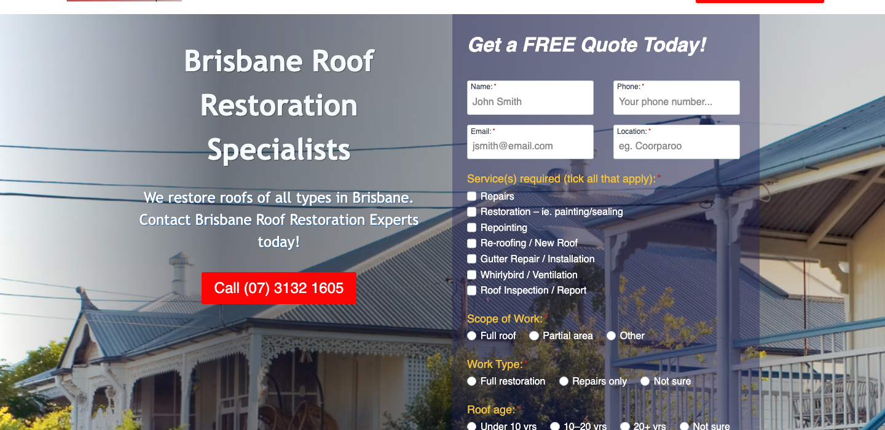
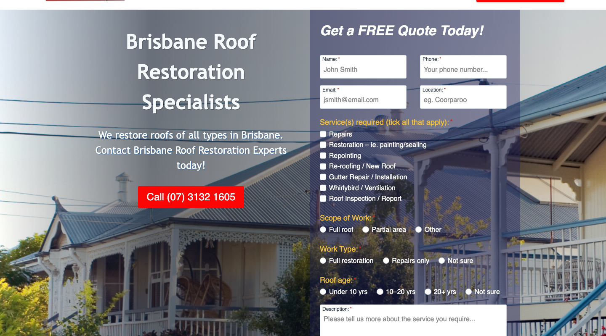

Internal Audit Report · ProfitsLocal
Brisbane Roof Restoration Experts
roofer ·Brisbane · ★ 4.9 (21 reviews)
总体判断
审计概览
audit_score=70 → low_priority · weakest: gbp 48, visual 50
联系方式 + GBP 快照
商家档案
independent_https_site六维度评分总览
每个维度的强弱在哪
现场证据 · 桌面 + 移动
客户访问时看到的页面


主要问题 · 1 项
影响转化的明显短板
homepage_title_clear
命中原因title='# Brisbane Roof Restoration Specialists' contains-name=true contains-niche=false
证据截图 · Desktop 600px region

规则细节 · 39 项明细
每条规则的命中与失分原因
Google Business Profile 48/100 8 规则
| 规则 | 命中 | 得分 | 原因 |
|---|---|---|---|
has_website_link | ✓ | 10/10 | website: https://brisbaneroofrestorationexperts.com.au/ |
review_volume_vs_peers | ✓ | 12/25 | 21 reviews |
average_rating | ✓ | 10/10 | ★4.9 |
has_hours | ✗ | 0/5 | no hours |
image_count | ✓ | 6/10 | 5 images |
has_business_description | ✓ | 10/10 | description present |
has_service_area | ✗ | 0/15 | no service area |
owner_replies_to_reviews | — | 0/15 | reply rate not enriched |
Technical 65/100 7 规则
| 规则 | 命中 | 得分 | 原因 |
|---|---|---|---|
https_enabled | ✓ | 20/20 | https |
first_paint_under_3s | — | 0/25 | LCP not measured (need Playwright/Lighthouse) |
mobile_responsive | ✓ | 30/30 | lighthouse mobile 80 |
core_web_vitals_pass | — | 0/10 | CWV not measured |
form_submittable | ✓ | 5/5 | form submits |
no_console_errors | ✓ | 5/5 | 0 console errors |
favicon_and_meta | ✓ | 5/5 | favicon: yes, meta: yes |
UX & Conversion 85/100 7 规则
| 规则 | 命中 | 得分 | 原因 |
|---|---|---|---|
above_fold_cta_within_5s | ✓ | 30/30 | CTA keyword found above fold |
phone_visible_above_fold | ✓ | 20/20 | phone digits above fold |
click_to_call_link | ✓ | 10/10 | tel: link present |
quote_or_booking_form | ✓ | 20/20 | <form> element present |
contact_path_short | — | 0/10 | click-depth not measured |
has_gallery | ✗ | 0/5 | no gallery |
has_testimonials | ✓ | 5/5 | testimonials section present |
Content 84/100 6 规则
| 规则 | 命中 | 得分 | 原因 |
|---|---|---|---|
homepage_title_clear | ✗ | 12/20 | title='# Brisbane Roof Restoration Specialists' contains-name=true contains-niche=false |
service_copy_specific | ✓ | 20/20 | 58 service-related verbs detected |
trust_signals_present | ✓ | 12/20 | 1 trust-keyword mentions |
localized_content | ✓ | 15/15 | mentions brisbane |
evidence_of_recent_update | ✓ | 15/15 | fresh year mentioned |
non_ai_filler_copy | ✓ | 10/10 | no obvious AI-filler |
SEO 85/100 5 规则
| 规则 | 命中 | 得分 | 原因 |
|---|---|---|---|
title_meta_present | ✓ | 25/25 | title=yes meta=yes |
h1_unique | ✓ | 20/20 | 1 <h1> tags |
local_schema_markup | ✓ | 20/20 | LocalBusiness schema present |
image_alt_present | ✓ | 20/20 | 5 images, 100% with alt |
sitemap_robots | — | 0/15 | /sitemap.xml + /robots.txt probe not run (need Playwright) |
Visual 50/100 1 规则
| 规则 | 命中 | 得分 | 原因 |
|---|---|---|---|
visual_dimension_stub | — | 50/100 | visual dimension is filled by Block E (vision LLM autoresearch) |
视觉审计 · Vision LLM
设计观感的整体诊断
Outdated visual styling with heavy text shadows and busy hero image reduces trust, while form demands too much information above the fold.
hero_text_shadow_illegibility
观察到The main headline 'Brisbane's Trusted Roof Restoration Experts' appears in white text with a dark semi-transparent shadow/stroke effect overlaid on a busy background image showing roof tiles and sky, creating significant legibility issues especially on the word 'Trusted'
为什么是问题When a local searcher lands on the page, they cannot quickly read the core value proposition because the text blends into the busy photographic background. Within 3-5 seconds they'll bounce to a competitor whose message is clear. The cognitive load of deciphering shadowed text on a complex image pattern triggers distrust—it feels like an amateur website from 2012.
正确长啥样Headline text should sit on a solid color block or semi-transparent overlay (e.g. dark navy rectangle at 85% opacity) that provides consistent contrast, with clean sans-serif type at 40-48px, no text shadow, ensuring WCAG AA contrast ratio of 4.5:1 minimum. Alternative: place headline below hero image on a white background.
redesign 怎么改Replace hero section with a flat colored background (brand navy or white) and overlaid high-contrast headline with no text effects, or use a darkened image overlay at 60% opacity with white text on top, ensuring all text is instantly readable without eye strain.
证据截图 · Desktop 700px region

desktop_form_13_checkboxes
观察到The right sidebar quote form displays 13 small checkboxes for different roofing services (Roof Restoration, Roof Repairs, Roof Replacement, Roof Cleaning, Tile Roof Restoration, Metal Roof Restoration, Colorbond Roofing, Roof Painting, Roof Leak Repairs, Gutter Cleaning, Gutter Repairs, Gutter Replacement, Solar Panel Cleaning) with a purple background box, occupying roughly 40% of the visible screen width
为什么是问题Asking a first-time visitor to parse and select from 13 technical options before they've even read about the business creates decision paralysis. Most homeowners searching 'roofer Brisbane' just know 'my roof leaks' or 'my roof looks old'—they don't know if they need restoration vs replacement. This wall of checkboxes signals 'complicated' and 'expensive' before trust is established, causing visitors to abandon the form. Industry data shows forms with >5 fields see 40-60% lower completion rates.
正确长啥样A single-field form above the fold asking for phone number only, or name + phone with a single line 'What can we help with?' text area (optional). Service selection should happen during the phone call consultation after rapport is built, or pushed below fold as an optional 'Tell us more' accordion.
redesign 怎么改Replace the 13-checkbox list with a 2-field form: 'Your Phone Number' and 'Your Name' with a prominent 'Get Free Quote' button. Add one optional text area below labeled 'Briefly describe your roof issue (optional)'. Move detailed service checkboxes to a second page or remove entirely—let the phone consultation handle scoping.
证据截图 · Element: form

desktop_form_purple_box_contrast
观察到The entire quote form sits inside a light purple/lavender rectangular box (#E8E0F5 approximate) with white form fields, creating minimal visual separation between the form container and individual input fields, especially visible in the checkbox section
为什么是问题The purple tint adds visual noise without aiding usability—it makes the form feel like a separate widget rather than an integrated part of the page, reducing trust. The low contrast between purple background and white fields can cause eye strain, and purple is not a standard color for professional trades in Australia (typically blue, green, or neutral grays). It looks like a generic template element, not a custom-designed conversion point.
正确长啥样Form should sit on white or very light gray background (#F9F9F9) with subtle border or drop shadow to define edges, using the brand's primary color (navy or teal) only for the submit button and focus states. Each input field should have a light gray border (#D0D0D0) that turns to brand color on focus.
redesign 怎么改Remove the purple background entirely; place form on white with a 1px light gray border or very subtle shadow. Use brand navy/teal only for the CTA button and input focus states. Ensure form fields have clear #E0E0E0 borders that are visible without the colored container.
证据截图 · Element: form

dated_logo_simple_icon
观察到The company logo in the top-left header consists of a simple line-drawn house icon with a triangular roof outline next to the text 'Brisbane Roof Restoration Experts' in a standard sans-serif font, resembling generic real-estate or home-services clipart from the early 2010s
为什么是问题This generic icon communicates 'cheap template' rather than 'established professional business.' When competing against roofers with custom photography-based branding or modern lettermark logos, this immediately positions the business as lower-tier. Local searchers—especially for a high-value service like roof restoration ($5,000-$15,000 jobs)—judge credibility in seconds, and a stock icon logo triggers 'is this a real company or a lead-gen site?' skepticism.
正确长啥样A custom wordmark logo featuring the business name in a distinctive sans-serif or serif typeface with a subtle roof-related visual element (e.g., a single roofline forming the top of the 'B' or 'R'), or a photographic emblem showing actual Brisbane roof work. Should feel 2024-current, not 2012-template. Reference: modern trade logos like Service Today, Jim's Roofing use bold type + minimal iconography.
redesign 怎么改Commission a custom logo: either a strong typographic wordmark (thick sans-serif with roof peak detail) in navy + coral, or a circular badge containing a high-quality photo of Brisbane roofline with the business name wrapping around it. Avoid generic house clipart entirely.
证据截图 · Full desktop

desktop_no_trust_signals_above_fold
观察到The visible above-the-fold area shows only the hero image, headline text, and the quote form—there are no visible customer reviews, star ratings, years-in-business badge, licensing/insurance mentions, before/after photo thumbnails, or recognizable third-party badges (Google reviews, Master Builders, etc.) in the top 900px of viewport
为什么是问题A local searcher arriving from Google has never heard of this business and needs immediate social proof to justify engaging. With roof work costing $5,000-$15,000, trust must be established within 5 seconds or they'll return to search results to find a roofer with visible 5-star reviews or recognizable badges. The absence of trust signals makes the page feel like a lead-generation landing page rather than a real business, especially when competitors often display '4.9 stars, 127 reviews' in their header.
正确长啥样A trust bar immediately below or integrated into the header showing: '4.8★ (94 Google Reviews) • 15+ Years in Brisbane • Fully Licensed & Insured' with small badge icons (Google, MBA, insurance logo). Alternatively, a small testimonial snippet or before/after image pair in the hero area sidebar, positioned above the form.
redesign 怎么改Add a horizontal trust bar below the navigation header displaying Google star rating + review count, years in business, key certifications (QBCC license, insurance) with small badge icons. Alternatively, replace the top 1/3 of the form area with a mini testimonial card ('John S., Paddington: Best roof team in Brisbane! ★★★★★') before the form fields begin.
证据截图 · Desktop 700px region

desktop_red_cta_button_small
观察到The main call-to-action button labeled 'Get Your Free Quote' at the bottom of the quote form is rendered in a red/crimson color (#D32F2F approximate) and appears to be roughly 200px wide by 40px tall, smaller than modern conversion-optimized buttons and using a color typically associated with warnings or errors rather than positive action
为什么是问题Red is psychologically associated with 'stop,' 'error,' or 'danger' in UI design—most high-converting sites use green, blue, or orange for primary CTAs. The small button size (appears ~40px tall) makes it harder to tap on mobile and reduces visual prominence, causing some visitors to overlook it or perceive it as a secondary action. Conversion research shows CTA buttons should be 48-56px tall minimum for easy thumb-tapping on mobile.
正确长啥样A large coral, teal, or bright orange button spanning nearly the full width of the form (at least 90% of form width), minimum 50px tall, with rounded corners (8px radius), white text, and a subtle hover state (darkens 10%). Color should align with the brand palette and signal 'go' rather than 'stop.' Example: #FF6B35 coral or #00ACC1 teal.
redesign 怎么改Replace red button with a brand-aligned color (coral #FF6B35 or teal #00ACC1), increase height to 52px, expand width to 100% of form container, add 2px of subtle shadow to lift it off the page, ensure white text at 18px bold. Test hover state that darkens 15%.
证据截图 · Desktop 800px region

需要保留的优点
- Clear headline communicates both service (roof restoration) and location (Brisbane) for strong local SEO relevance
- Quote form is prominently placed above the fold on desktop, showing conversion intent
- Phone number appears to be visible in header area for direct contact option
Redesign 优先级
- 1. Simplify quote form to 2 fields maximum (name + phone) and remove 13-checkbox service selection
- 2. Fix hero text legibility by placing headline on solid background or high-contrast overlay instead of busy image with shadow
- 3. Add trust signals above fold (Google star rating, review count, years in business, licensing badges)
客户评论分析 · Google Reviews
客户在 Google 上怎么夸 / 怎么抱怨
Customers consistently praise the business for exceptional responsiveness, reliability, and high-quality workmanship on both large restorations and small repairs. The reviews highlight a personal touch with quick quoting and professional execution, resulting in strong recommendations.
客户一致夸赞
可直接用在 redesign 的 quote
"Aron gave us outstanding customer service. He quoted within 24 hours of my enquiry and began work the next day."
放哪Hero section proof of speed and service quality
"The result has dramatically improved our street appeal and home value."
放哪Value proposition section highlighting ROI
"Aaron answered my phone call message, promptly, arranged to meet and see the job, and turned up on time."
放哪Trust section emphasizing reliability and communication
"Most want to restore your entire roof... My job was a smaller job... Aaron... turned up on time."
放哪Service page highlighting flexibility for minor repairs
商家回复观察
No owner replies are visible in the provided sample data. While the reviews are highly positive, the absence of visible responses suggests a missed opportunity to reinforce engagement.
Redesign 可发力的钩子
- Feature the '24-hour quote' metric prominently in the header to address urgency.
- Use Loren's review to create a dedicated 'Minor Repairs' section to capture leads who feel ignored by larger competitors.
- Highlight the 'home value' improvement in before/after gallery captions.
加载速度证据 · 慢速 4G 移动网络
客户在手机上看到的真实加载体验
下方视频在 1.6 Mbps 下行 / 150ms 延迟 / 4× CPU 节流条件下录制 — 这是大多数本地搜索访客在手机上真实看到的体验。
⏳ Mockup 站点对比视频 — 等 ProfitsLocal 真实 mockup 上线后录制 side-by-side 对比。
销售切入点
从 audit 数据自动推导的开场话术
- 你的最大短板是 Google Business Profile（得分 48/100）